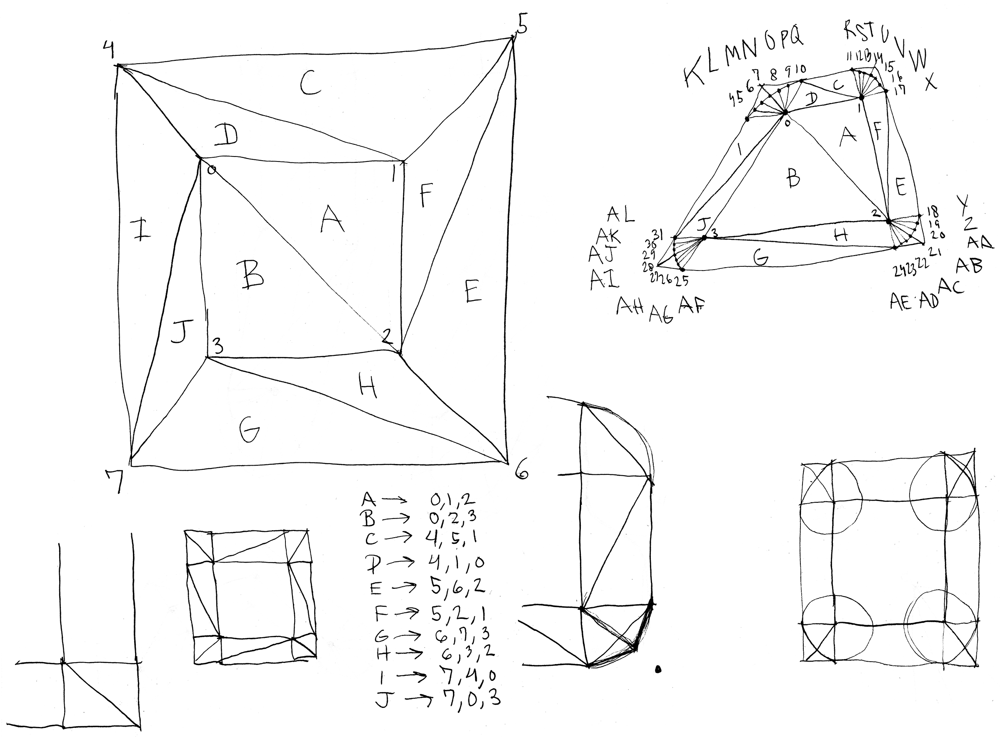
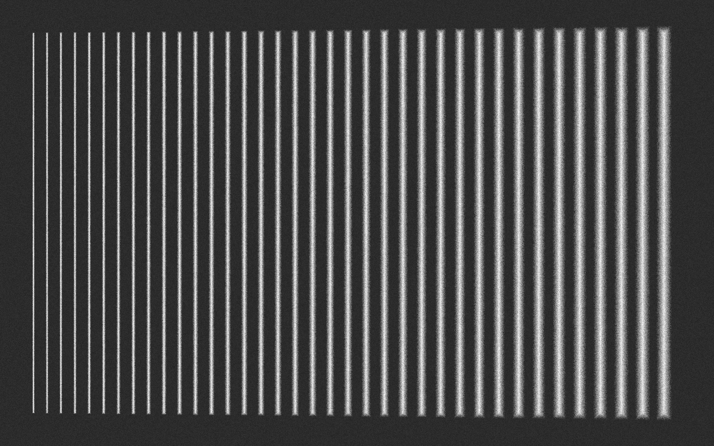
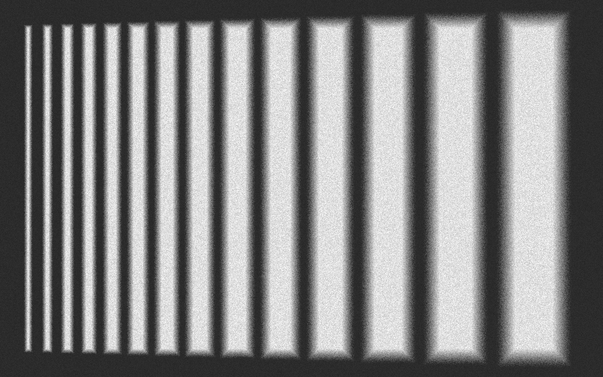

Quadrilatères flous
Dessiner des formes floues avec WebGL n’est pas simple. Par défaut, toutes les formes créées sont très précises et leurs contours bien définis. Comme je cherche à créer des animations aux ambiances brumeuses et incertaines, je suis en train de créer quelques premiers outils pour me permettre de dessiner du flou avec WebGL.
Dessiner des cercles flous ne s’est pas avéré trop compliqué, puisqu’une simple fonction de distance par rapport au centre du cercle peut être calculée aisément par le gpu. Le dessin de formes plus complexes me demande cependant d’en apprendre beaucoup plus sur WebGL, une technologie que je connais encore peu.
J’ai commencé par les quadrilatères. J’ai créé un système avec lequel je peux définir un rectangle principal, qui sera formé par les triangles a et b que l’on voit dans le diagramme en haut à gauche de mes notes crayonnées.
Résultats
Au final, je trouve que mon système fonctionne bien lorsque je l’utilise pour faire des lignes relativement minces, mais il est peu convainquant lorsqu’il produit des formes géométriques plus grandes. Comme on le voit dans l’image ci-dessous, les formes ont des coins pointus au lieu d’avoir les coins arrondis que je souhaiterais voir.
 Les lignes chantantes
Je me suis servi de ces quadrilatères flous dans un morceau de programmation in vivo intitulé Les framboisiers sous la neige. Le morceau se trouve sur YouTube. En voici quelques images fixes :


Le code écrit pour réaliser ce morceau in vivo peut être consulté sur GitHub. La version la plus avancée de ce projet se trouve sur la branche pcd-set-b. À noter que pour fonctionner pleinement, ce projet doit être démarré avec mon application Les environs, qui permet la programmation in vivo et prend en charge le serveur SuperCollider nécessaire à produire la musique. Cette application se trouve ici.
Comme l’ordinateur que j’utilise pour faire ma programmation in vivo n’est pas très puissant, je tente toujours d’optimiser mon code. Dans ce cas-ci, comme ce projet n’affichait que des lignes totalement verticales, il m’était possible d’écrire une version plus performante de ma fonction makeLine(), que j’ai nommée makeOrthoLine(). Cette version ne nécessite aucun calcul trigonométrique. makeOrthoLine() dépend aussi de makeOrthoQuad(), une version simplifiée de makeQuad(). Le code complet de ces fonctions se trouve dans ce fichier.
function makeOrthoLine(x0, y0, x1, y1) {
let halfW = lineOptions.weight * 0.5;
let rectangle = makeOrthoQuad({
c: [lineOptions.r, lineOptions.g, lineOptions.b, lineOptions.a],
v: [
[x0 - halfW, y0],
[x0 + halfW, y0],
[x1 - halfW, y1],
[x1 + halfW, y1]
],
blurFactor: lineOptions.blurFactor
});
addRectangleToBuffers(rectangle);
}Contexte
Cette note de blog fait partie de mon projet de recherche Vers un cinéma algorithmique, démarré en avril 2018. Je vous invite à consulter la toute première note du projet pour en apprendre davantage.